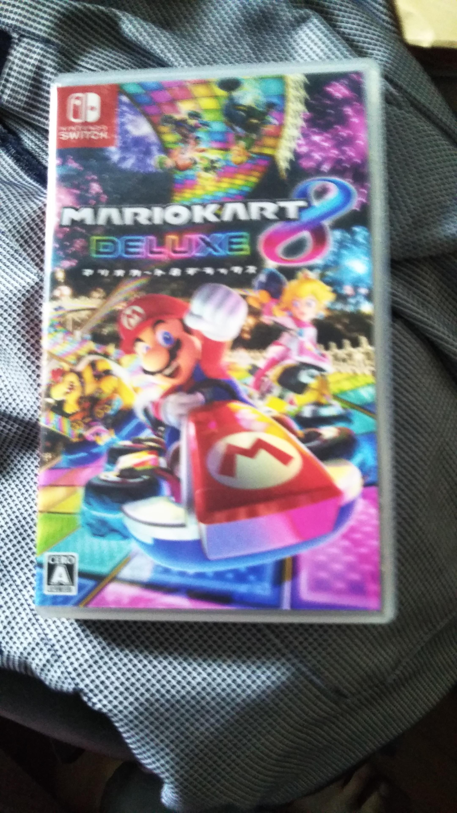
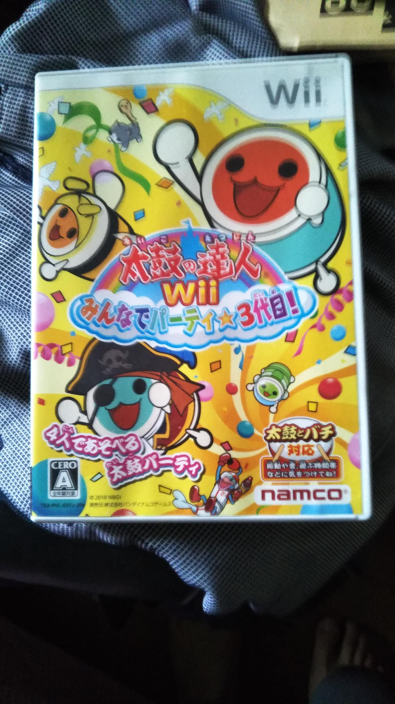
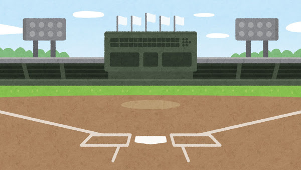
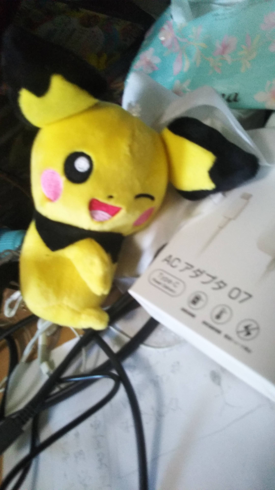

プロフィール
- 名前
- Yusuke Kushige
- 趣味
- ゲーム
- 好きな言葉
- 大器晩成
私の好きなもの「海」
私は海が好きで憧れています。昔シンガポールの海で泳いだことがあり、その時とても気持ちよかったです。
私の好きな作曲家「ベートーベン」
私はベートーベンの第九交響曲が大好きです。肖像画がとてもかっこいいと思います。
私の好きなゲーム

私は、マリオカートと太鼓の達人が好きです。マリオカートは全ての要素を解禁済みです。太鼓の達人は今練習中です。
私の好きなスポーツ「野球」

私は野球を見るのが好きで、いつも友人と予想をしたり結果の速報をしたりしています。
私の好きなキャラクター

私はポケモンが好きです。
私の好きな場所
私は江ノ島の綺麗な海が好きです。稚児ヶ淵はとても美しいです。